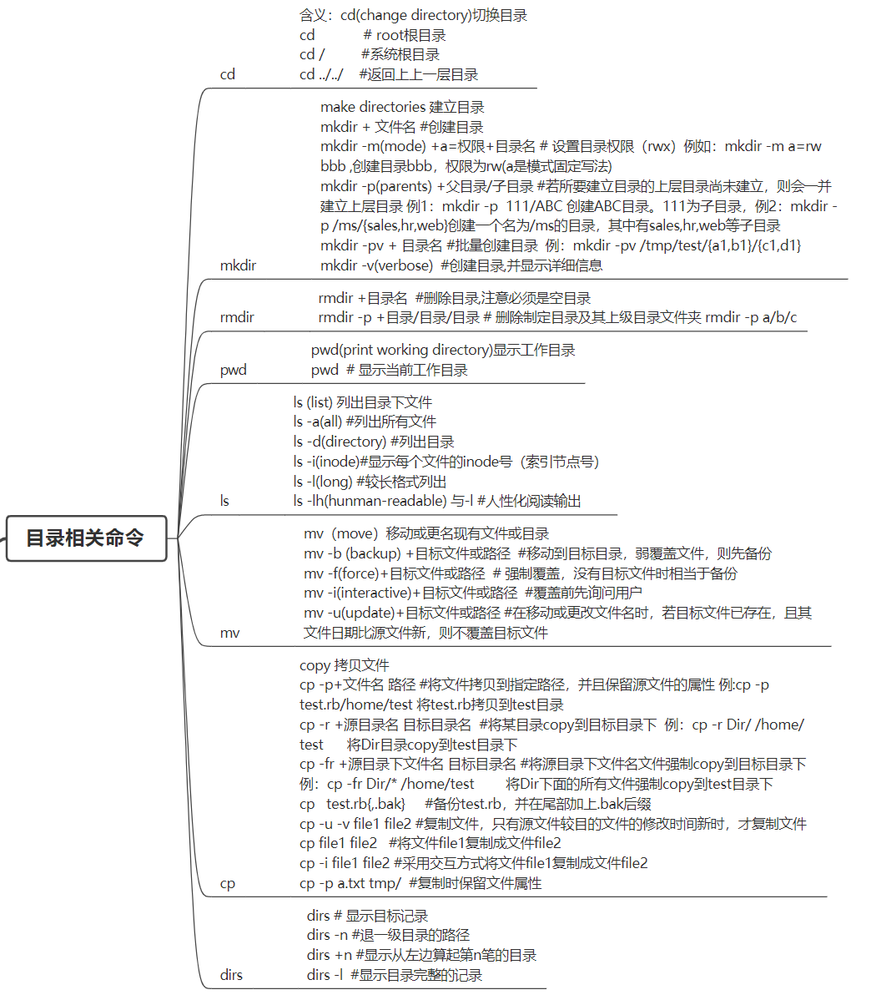
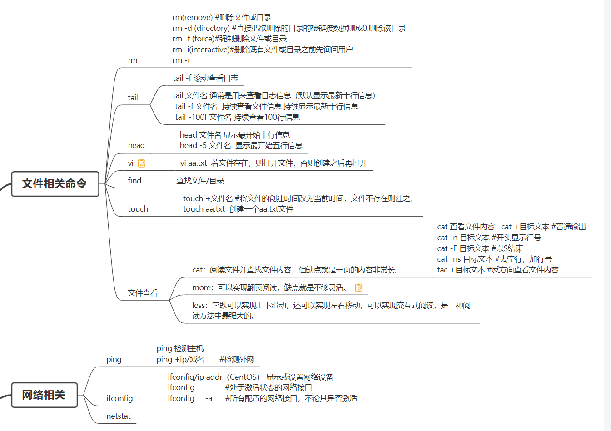
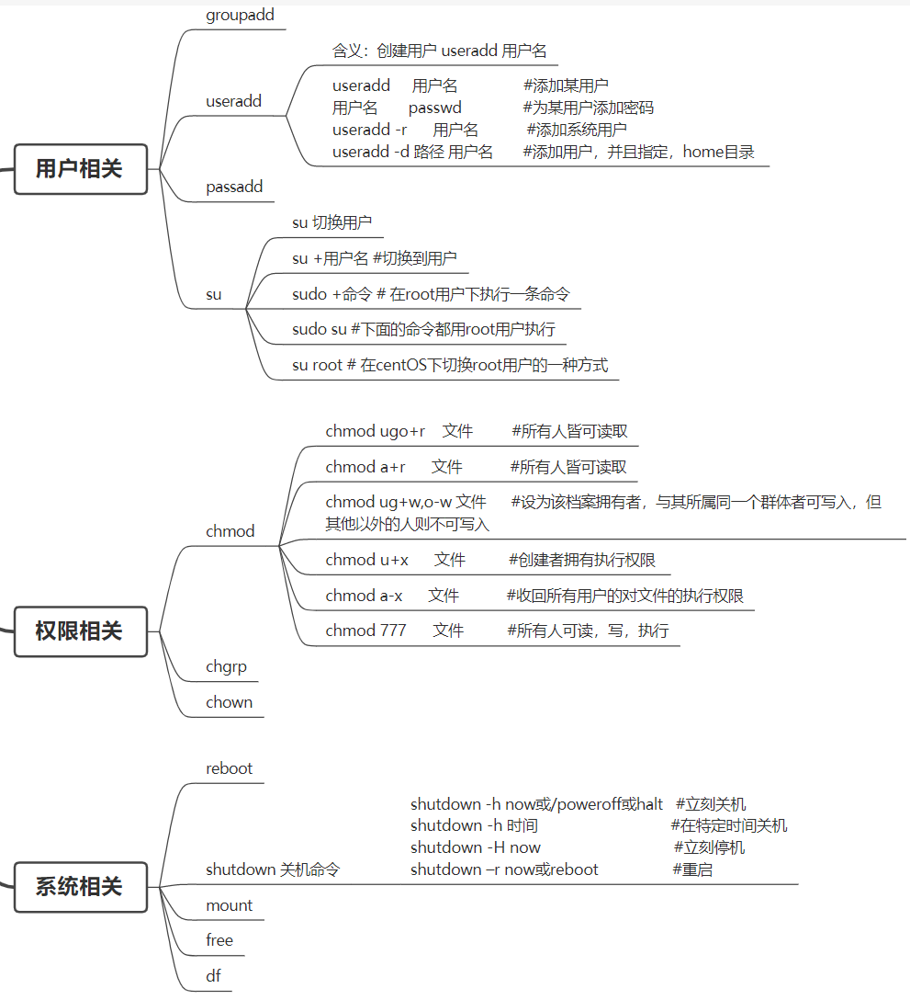
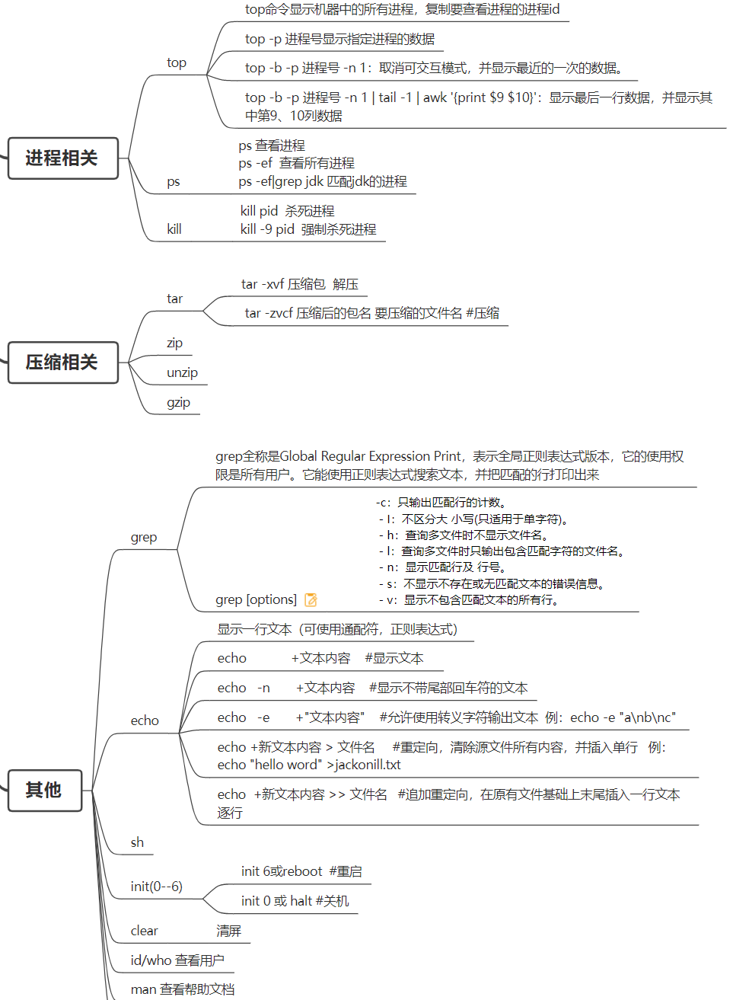

Linux基本指令
- 查找日志关键词 grep xx.log -e 关键词
查看文件
- cat，tail,head,more,less(可以往上也可以往下)
- cat : 从第一行开始全部的文件内容
- more：一页一页地显示文件内容
- less: 一页一页地显示文件内容，但是允许向前翻页
- tail：只显示结尾几行
- head: 只显示前几行
递归创建文件--这个不会 ??
- mkdir -p a/b/c
创建一个文件拥有者可读，可写可执行。
- mkdir -m 700 a 创建a文件的时候设置拥有者拥有可读可写可执行权限,所属组和其他用于没有权限
问了chmod
- chmod a+x a.txt 所有人添加对a.txt的可执行权限
命令是控制用户对文件的权限的命令
- chmod a+x a.txt 所有人添加对a.txt的可执行权限
文件由10位标识，第一个字母表示什么
- 第1位：表示linux的文件类型，“-” 代表普通文件，“d” 代表目录
- 2-4(rwx) 对所有者u的r,w,x
- 5-7(rwx) 对所有组g的r,w,x
- 8-10(rwx) 对其他的o的r,w,x
问了怎么查8080 端口被谁占用
说了netstat -anp |findstr 8080 这样只能查到PID，不能查到谁占用？？
linux命令总结
   